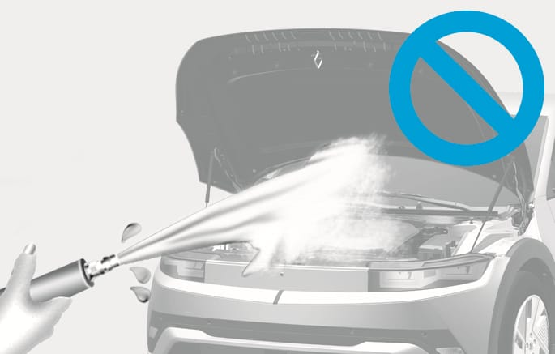

고압 세차 시 주의사항
고압수로 인한 외장 부품 및 도장면의 손상을 예방하려면 다음 지시를 따르십시오.
모터룸 내부에 물을 분사하지 마십시오.
-
전기 회로, 전기 장치, 모터, 에어 덕트 등으로 물이 유입되어 차량이 고장이 발생할 수 있습니다.

2C_VehicleWashCaution
-
세차 후에는 브레이크가 젖어 있을 수 있으므로, 서행하며 브레이크 페달을 밟아 제동 성능을 점검하십시오.
세차 직후에 유리창에서 소음이 발생하는 경우, 유리창 주변 고무 부품의 물기를 제거한 후 유리창을 작동하십시오.
-
실링부를 피해 고압수를 분사하십시오. 차량에 적용된 프레임리스 도어 실링이 고압수의 압력에 의해 손상될 수 있습니다.
-
세차 노즐과 차량과의 간격을 최소 30 cm 이상으로 유지하십시오.
-
창문, 전조등 등 외부 조명, 카메라, 센서, 범퍼 및, 타이어 등 고무 부품이나 부드러운 소재로 된 부품을 피해 고압수를 분사하십시오.
-
차량 하부에 고압수를 분사하지 마십시오.
-
고압수를 한 곳에 집중해 분사하지 마십시오. 차량의 도장면이 손상될 수 있습니다.
-
유리창 주변에 고압수를 집중해 분사하지 마십시오. 실내로 물이 유입될 수 있습니다.
-
눈이나 얼음을 고압수로 제거하지 마십시오.